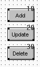

When you place controls in a window, PowerBuilder assigns them a default tab order, the default sequence in which focus moves from control to control when the user presses the Tab key.
 Tab order in user objects When the user tabs to a custom user object in a window and
then presses the Tab key, focus moves to the next control in the
tab order for the user object. After the user tabs to all the controls
in the tab order for the user object, focus moves to the next control
in the window tab order.
Tab order in user objects When the user tabs to a custom user object in a window and
then presses the Tab key, focus moves to the next control in the
tab order for the user object. After the user tabs to all the controls
in the tab order for the user object, focus moves to the next control
in the window tab order.
PowerBuilder uses the relative positions of controls in a window to establish the default tab order. It looks at the positions in the following order:
The control with the smallest Y distance is the first control in the default tab order. If multiple controls have the same Y distance, PowerBuilder uses the X distance to determine the tab order among them.
 Default tab values The default tab value for drawing objects and RadioButtons
in a GroupBox is 0, which means the control is skipped when the
user tabs from control to control.
Default tab values The default tab value for drawing objects and RadioButtons
in a GroupBox is 0, which means the control is skipped when the
user tabs from control to control.
When you add a control to the window, PowerBuilder obtains the tab value of the control that precedes the new control in the tab order and assigns the new control the next number.
For example, if the tab values for controls A, B, and C are 30, 10, and 20 respectively and you add control D between controls A and B, PowerBuilder assigns control D the tab value 40.
 To change the tab order:
To change the tab order:
Select Format>Tab Order from the menu bar, or click the Tab Order button on PainterBar1 (next to the Preview button).
The current tab order displays. If this is the first time you have used Tab Order for the window, the default tab order displays.

Use the mouse or the Tab key to move the pointer to the tab value you want to change.
Enter a new tab value from 0 to 9999.
The value 0 removes the control from the tab order. It does not matter exactly what value you use, other than 0. Only the relative value is significant. For example, if you want the user to tab to control B after control A but before control C, set the tab value for control B so it is between the value for control A and the value for control C.
 Tab tips A tab order value of 0 does not prevent a control from being
selected or activated or from receiving keyboard events. To prevent
a user from activating a control with the mouse, clear the Enabled
check box on its General property page.
Tab tips A tab order value of 0 does not prevent a control from being
selected or activated or from receiving keyboard events. To prevent
a user from activating a control with the mouse, clear the Enabled
check box on its General property page.
Repeat the procedure until you have the tab order you want.
Select Format>Tab Order or the Tab Order button again.
PowerBuilder saves the tab order.
Each time you select Tab Order, PowerBuilder renumbers the tab order values to include any controls that have been added to the window and to allow space to insert new controls in the tab order. For example, if the original tab values for controls A, B, and C were 10, 20, and 30, and you insert control D between A and B and give it a tab value of 15, when you select tab order again, the controls A, B, and C will have the tab values 10, 30, and 40, and control D will have the tab value 20.